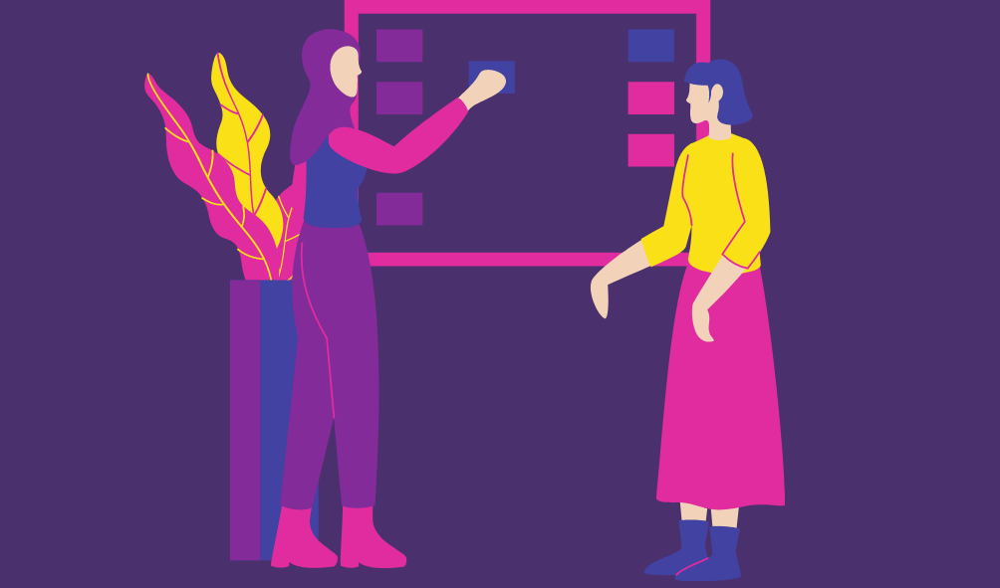
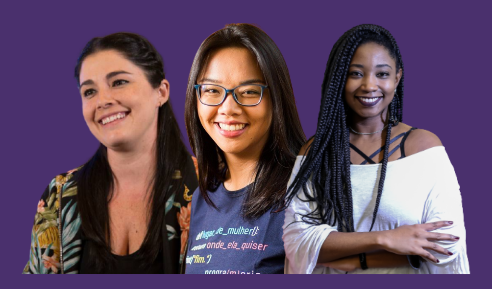
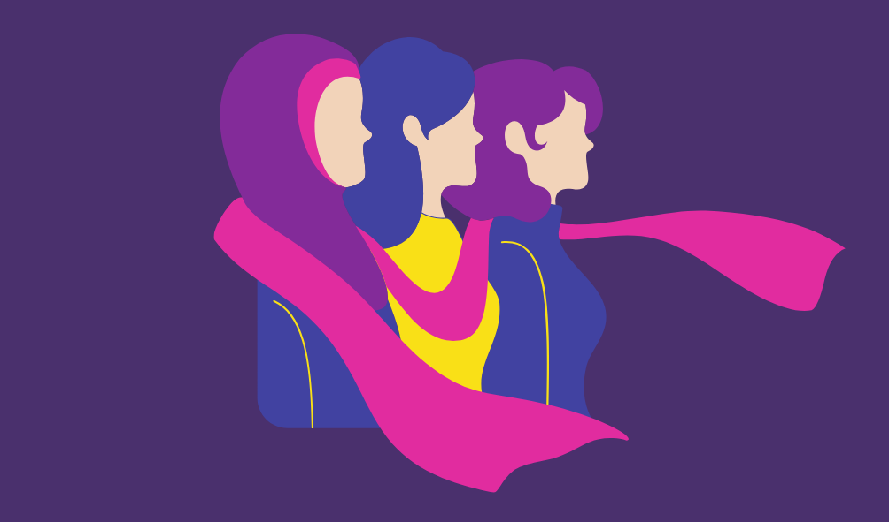

O setor de tecnologia, é a área que mais cresce no Brasil e no mundo e é possível notar que a presença feminina tem crescido e conquistado mais espaços. É possível observar que, carreiras nesta área atualmente não são mais consideradas exclusivamente masculinas e que os pais estão apoiando as filhas que querem segui-las. Há mais mulheres capacitadas no mercado e isso é muito bom. O Brasil hoje vive um déficit de profissionais qualificados no setor tecnológico, especialmente programadores, e a entrada de mulheres na área supre a falta de mão de obra e ao mesmo tempo, traz diversidade para o setor.
Apesar da evolução e da inclusão de mais mulheres no mercado tecnológico, ainda existe uma desigualdade exorbitante quando comparamos a quantidade de mulheres, não só nas Universidades como também no mercado de trabalho. Isso desestimula mulheres a tentar. Por vezes, escutam que não são boas o suficiente ou que não possuem pensamento lógico semelhante ao de um homem.
Mesmo com novas iniciativas na área da tecnologia voltadas para a capacitação feminina, as mulheres ainda não chegaram de forma robusta ao mercado de trabalho
Devemos capacitar lideranças e times de RH para que possam buscar mulheres para as vagas para garantir a inclusão e a diversidade no setor de tecnologia.
Iana Chan
Iana é é jornalista formada pela Universidade de São Paulo (USP). Foi Program Manager na Liga Ventures e atualmente é a CEO e Cofundadora da PrograMaria, que é uma startup que busca empoderar meninas e mulheres por meio da tecnologia e da programação. Além disso, tem o objetivo de promover oportunidades e ferramentas para que elas deem os primeiros passos na aprendizagem da programação.
Karen Santos
Karen iniciou sua carreira em 2015 como Designer Gráfico no Live Marketing. Hoje ela é Product Designer no Quinto Andar e CEO da UX para Minas Pretas, que é uma iniciativa por e para mulheres negras com foco em UX.
Mariel Reyes
Mariel é uma das fundadoras do Nubank, e a criadora do {reprograma}, projeto que ensina programação de graça a mulheres cis e trans. O maior curso oferecido pelo projeto, chamado Bootcamp Junior
A PrograMaria tem como objetivo incentivar a participação de mulheres nas áreas de tecnologia da informação e empreendedorismo através da produção de conteúdo como entrevistas, reportagens e infográficos.
ReprogramaPrograma de capacitação de mulheres em Front-End e Back-End, onde além da tecnologia aprendem sobre empreendedorismo e possuem um programa de mentoria.
Ux para Minas PretasIniciativa por e para mulheres negras com foco em UX. Promovemos a equidade de mulheres negras no mercado de tecnologia com foco em UX, por meio de ações de formação, empoderamento, compartilhamento de conhecimento e articulação em rede.
